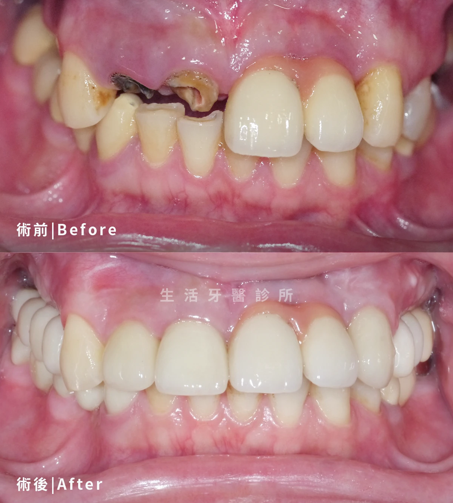
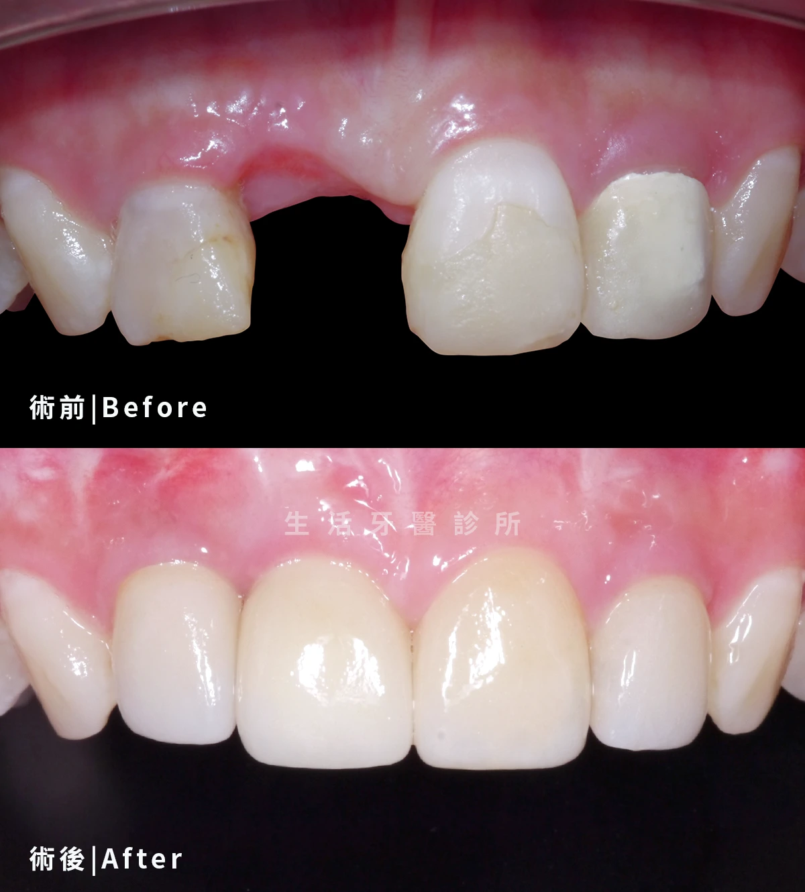
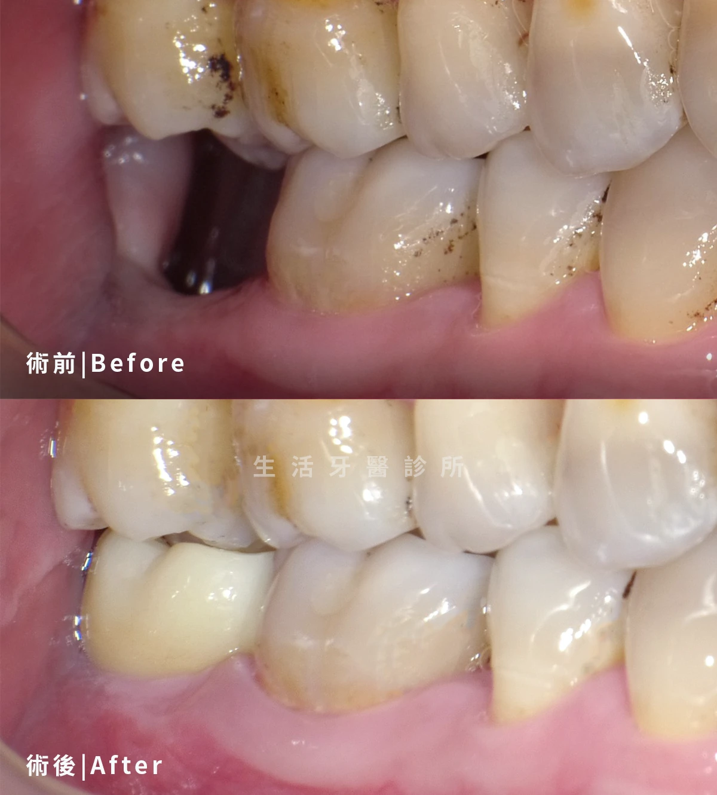

後牙臼齒多顆植牙
精準重建缺牙，恢復自然咀嚼
透過數位影像評估缺牙位置與齒槽骨條件，規劃合適的植體角度與深度，讓植牙成果自然又耐咬。
以數位影像、精準規劃與個人化治療重建安心笑容
數位植牙需要整體評估缺牙位置、齒槽骨條件、咬合關係、口腔健康與全身狀況。 生活牙醫透過數位化手術規劃，協助患者重建穩定咀嚼功能與自然笑容。

數位植牙實際案例分享，實際治療方式仍需由醫師評估口腔條件、骨質、咬合與全身健康狀況後規劃。





想了解自己的狀況是否適合數位植牙，可以先預約初診評估。生活牙醫會依照缺牙狀況、骨質、預算與期待，安排合適醫師協助規劃。